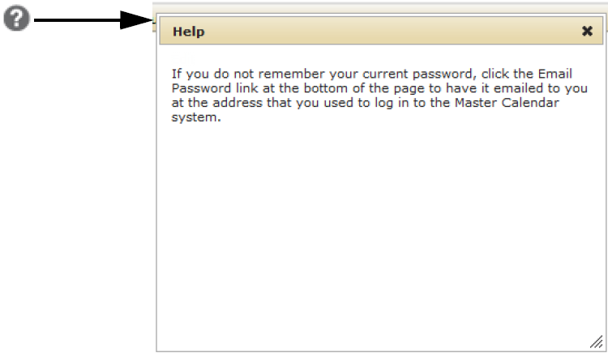
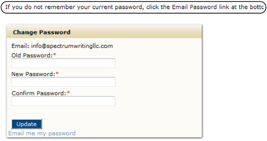

Help text is text is customized help or hints to about how to use Master Calendar that your organization may have set up. Your Master Calendar site administrator can establish help text in one of two ways on specific pages in Master Calendar:
If your administrator has collapsed the help text for your system behind a Help icon, you can click the Help icon to expand help text; otherwise, when you open a page that contains help text, it will show directly on the page.
Collapsed help text

Help text directly on a page
